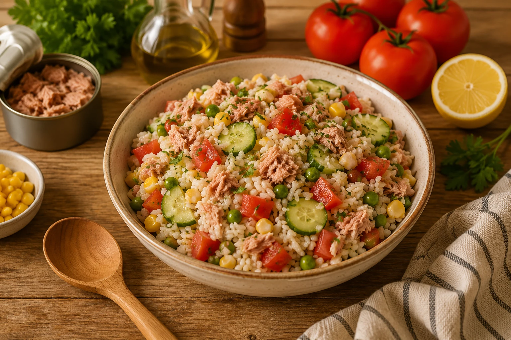

Salade de riz au thon
Une salade de riz au thon complète, fraîche et pratique, parfaite pour un repas froid, un pique-nique ou pour utiliser un reste de riz.
Le riz doit être refroidi avant l’assemblage pour garder une salade nette. Le thon apporte les protéines, les légumes ajoutent du croquant et l’assaisonnement se dose au dernier moment.

⚖️ Adapter les quantités
🧺 Ingrédients avec quantités
Principaux
- 280 g — riz
- 200 g — thon égoutté
- 250 g — tomates
Secondaires
- 150 g — maïs égoutté
- 4 c. à soupe — vinaigrette ou mayonnaise
- 150 g — concombre ou légume croquant
Optionnels
- 2 pièces — œufs durs
- 50 g — cornichons
- 1 c. à soupe — herbes fraîches
👩🍳 Préparation détaillée
- Cuire le riz dans de l’eau salée, puis l’égoutter. Le rincer rapidement à l’eau froide ou l’étaler pour le refroidir.
- Égoutter et émietter le thon. Couper les tomates, le concombre ou les légumes disponibles en petits morceaux.
- Mélanger le riz refroidi, le thon et les légumes dans un grand saladier.
- Préparer une sauce simple avec huile, vinaigre, sel et poivre, ou une petite quantité de mayonnaise.
- Ajouter la sauce au dernier moment, mélanger délicatement et servir frais.
💡 Astuce anti-gaspi
Un reste de riz de la veille fonctionne très bien. Ajouter la sauce juste avant de servir évite que la salade ne devienne pâteuse.
🔁 Variantes possibles
Ajouter œufs durs, maïs, cornichons, olives, haricots rouges, pois chiches, restes de poulet, dés de fromage ou herbes fraîches. Remplacer la mayonnaise par une vinaigrette moutardée.
🧭 Repères alimentaires
Ces repères sont indicatifs. Vérifiez les étiquettes, les traces éventuelles et les consignes propres aux produits utilisés.
Conservation : À conserver 24 h au réfrigérateur dans une boîte fermée.
Réchauffage : À réchauffer doucement si nécessaire.
📊 Valeurs nutritionnelles estimées
Estimation indicative et non officielle. Les valeurs nutritionnelles et le Nutri-Score estimé sont calculés à partir des quantités de référence, selon le nouvel algorithme Nutri-Score applicable en France depuis mars 2025. Ils peuvent varier selon les marques, les portions, les substitutions et les méthodes de cuisson. Ils ne remplacent ni les étiquettes des produits ni un avis médical ou diététique.
Non officiel
Score algorithmique estimé : -2 point(s) — nouvel algorithme 2025.
| Valeur | Par portion | Pour 100 g |
|---|---|---|
| Énergie | 1972 kJ / 471.4 kcal | 629 kJ / 150.2 kcal |
| Protéines | 25.0 g | 8.0 g |
| Glucides | 65.9 g | 21.0 g |
| dont sucres | 5.2 g | 1.6 g |
| Lipides | 11.1 g | 3.5 g |
| dont saturés | 2.0 g | 0.6 g |
| Fibres | 3.2 g | 1.0 g |
| Sel | 1.1 g | 0.4 g |
📱 QR code
QR code vers la fiche en ligne.
https://recettesducoeur.github.io/recettes/20000101-004.html
Le bouton Imprimer conserve les portions et quantités actuellement affichées. Le PDF correspond à la recette de référence.